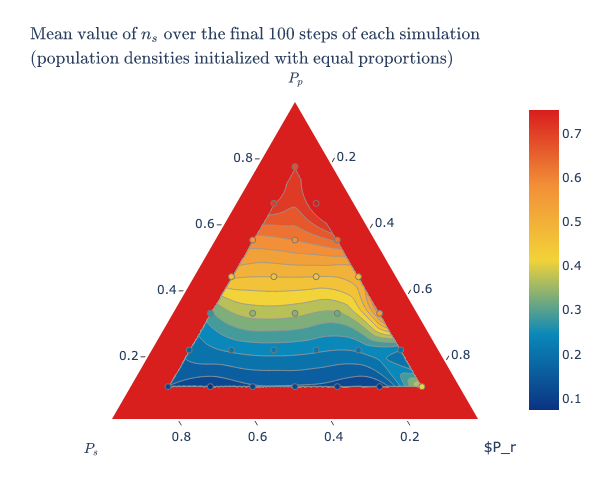

This notebook simulates the evolution of the system with local dispersal, featuring three variants of the rock-scissors-paper game. All lattice-based model were developed using the Mesa framework, which provides visualization tools to observe the spatial structures emerging from agent interactions.
Importing the necessary libraries:
Code
import sysimport osimport solaraimport mesaimport numpy as npimport pandas as pdfrom matplotlib.figure import Figureimport plotly.express as pximport plotly.figure_factory as ffimport matplotlib.pyplot as pltfrom mesa.experimental import JupyterVizsys.path.append(os.path.abspath('..'))from lattice_models.model_rand_act import RSPRandActfrom lattice_models.model_sim_act import RSPSimActfrom lattice_models.model_mobility import RSPMobility%matplotlib inline
Frean and Abraham model
In the Frean and Abraham model [1], the \(N\) sites are taken to be sites in a periodic, rectangular lattice and each agent is activated once per time-step, in random order. During each activation, an agent competes with a randomly chosen neighboring agent. If the neighboring agent can be defeated, the agent wins the competition with a probability determined by the invasion rate. If the agent wins the competition, the neighboring agent is transformed into an individual of the same species of the winning agent.
Implementation details
The model is defined by the class RSPRandAct in the file ../lattice_models/model_rand_act.py:
Code
%pycat ../lattice_models/model_rand_act.py
import mesa
from .patch_rand_act import PatchRandAct
from mesa.datacollection import DataCollector
class RSPRandAct(mesa.Model):
"""
This model is based on the Rock-Paper-Scissors model proposed by Frean and Abraham.
Reference:
Frean, Marcus, and Edward R. Abraham. "Rock-scissors-paper and the survival of the weakest."
Proceedings of the Royal Society of London. Series B: Biological Sciences 268.1474 (2001): 1323-1327.
"""
# key: species, value: list of species that the key species can beat
# e.g. ROCK (0) beats SCISSOR (1), SCISSOR (1) beats PAPER (2), PAPER (2) beats ROCK (0)
rules3 = {0: [1], 1: [2], 2: [0]}
rules4 = {0: [1], 1: [2], 2: [3], 3: [0]}
rules5 = {0: [1,2], 1: [2,3], 2: [3,4], 3: [4,0], 4: [0,1]}
def __init__(self,
init0, init1, init2, init3, init4,
invrate0, invrate1, invrate2, invrate3, invrate4,
n_species,
color_map,
increase_rate=False,
width=50, height=50):
"""
Initialize the model with the given parameters.
"""
super().__init__()
self.n_species = n_species
self.color_map = color_map
self.increase_rate = increase_rate
if self.n_species == 3:
self.init_probabilities = [init0, init1, init2]
self.invasion_rates = [invrate0, invrate1, invrate2]
self.rules = self.rules3
elif self.n_species == 4:
self.init_probabilities = [init0, init1, init2, init3]
self.invasion_rates = [invrate0, invrate1, invrate2, invrate3]
self.rules = self.rules4
else: # n_species == 5
self.init_probabilities = [init0, init1, init2, init3, init4]
self.invasion_rates = [invrate0, invrate1, invrate2, invrate3, invrate4]
self.rules = self.rules5
# set up agent scheduler
self.schedule = mesa.time.RandomActivation(self)
# use a simple grid, where edges wrap around.
self.grid = mesa.space.SingleGrid(width, height, torus=True)
# place a patch at each location, randomly initializing it according to the given initial proportions
for _, (x, y) in self.grid.coord_iter():
patch_init_state = self.random.choices(range(self.n_species), weights=self.init_probabilities, k=1)[0]
patch = PatchRandAct(pos=(x, y), model=self, init_state=patch_init_state)
self.grid.place_agent(patch, (x, y))
self.schedule.add(patch)
self.running = True
# collect data
model_reporter = {}
for i in range(self.n_species):
model_reporter[i] = lambda model, species=i: model.count_patches(species)
if self.increase_rate:
model_reporter['increased_rate'] = lambda model: model.invasion_rates[0]
self.datacollector = DataCollector(
model_reporter
)
self.datacollector.collect(self)
def count_patches(self, species):
"""
Helper method to count the number of patches in the given state.
"""
return sum([1 for patch in self.schedule.agents if patch.state == species])
def step(self):
"""
Have the scheduler advance each patch by one step.
"""
self.schedule.step()
self.datacollector.collect(self)
n_existint_species = sum([1 for i in range(self.n_species) if self.count_patches(i) == 0])
if n_existint_species == self.n_species-1:
self.running = False
The model can be simulated with \(3\), \(4\), or \(5\) species. When there are \(4\) species, species \(<1,3>\) and \(<2,4>\) do not compete with each other.
Each agent is activated once per step, in random order, with the order reshuffled each step, through the mesa.time.RandomActivation scheduler.
Agents are situated on a rectangular, periodic grid (i.e. torus), where each cell contains exactly at most one agent. Such a grid is created by the mesa.space.SingleGrid class.
The grid is randomly initialized by placing agents in each cell according to the initial proportions of the species (the parameters init* are used as weights in the random.choices function).
The behavior of each agent (grid patch) is defined by the class PatchRandAct in the file ../lattice_models/patch_rand_act.py:
Code
%pycat ../lattice_models/patch_rand_act.py
import mesa
class PatchRandAct(mesa.Agent):
"""Represents a single patch in the simulation."""
def __init__(self, pos, model, init_state):
"""
Create a patch, in the given state, at the given x, y position.
"""
super().__init__(pos, model)
self.rules = model.rules
self.n_species = model.n_species
self.color_map = model.color_map
self.x, self.y = pos
self.state = init_state
self._nextState = None
def step(self):
"""
Compute the next state of the patch according to the rules of the game
and the invasion rates of the species.
"""
# get the neighbors
neighbors = self.model.grid.get_neighbors((self.x, self.y), moore=True)
# select a random neighbor
neighbor = self.random.choice(neighbors)
# if the neighbor can be defeated
if neighbor.state in self.rules[self.state]:
# change the neighbor state according to the invasion rate
win_rate = self.model.invasion_rates[self.state]
new_neigh_state = self.random.choices(
[self.state, neighbor.state],
weights=[win_rate, 1-win_rate],
k=1)[0]
neighbor.state = new_neigh_state
# increase species 0 invasion rate if needed
if (self.model.increase_rate and self.state==0 and \
new_neigh_state==self.state and self.model.schedule.steps>100):
rand = self.random.uniform(0, 1e-4)
new_rate = self.model.invasion_rates[self.state] + rand
if 0 < new_rate < 1:
self.model.invasion_rates[self.state] = new_rate
Each patch has a Moore neighborhood, i.e. the eight cells surrounding it.
At each step, a neighbor is randomly chosen and the agent in the patch interacts with it. According to the invasion rates, the neighboring agent can be overtaken and transformed into the same species of the agent in the patch.
If the parameter increase_rate is set to True, after \(100\) steps the invasion rate of species \(0\) is increased whenever it replicates onto a new site. The increment is a random number uniformly distributed between \(0\) and \(10^{-4}\) and the new invasion rate is accepted if it is in the range \(0<P_0<1\)). This is done to replicate the experiment of Figure 3 in [1].
Simulations
Defining functions to run simulations and visualize the evolution of the system:
Code
def run_model(model_class, params, steps):''' This function runs the model, given the model class, the parameters and the number of steps. Parameters ---------- model_class : class The model class to be run. params : dict The parameters of the model. steps : int The number of steps to run the model. ''' model = model_class(**params)for i inrange(steps): model.step()return modeldef agent_portrayal(cell):''' This function defines the appearance of the agents in the visualization. Parameters ---------- cell : object The agent to be visualized. '''return {"color": cell.color_map[cell.state], "marker": "s", "size": 1}def draw_grid(grid, agent_portrayal, title=None, ax=None):''' This function draws the lattice grid. Parameters ---------- grid : object The grid to be visualized. agent_portrayal : function The function that defines the appearance of the agents. title : str The title of the plot. ax : object The matplotlib axis to draw the plot. '''def portray(g): x = [] y = [] s = [] # size c = [] # colorfor i inrange(g.width):for j inrange(g.height): content = g._grid[i][j]ifnot content:continueifnothasattr(content, "__iter__"):# Is a single grid content = [content]for agent in content: data = agent_portrayal(agent) x.append(i) y.append(j)if"size"in data: s.append(data["size"])if"color"in data: c.append(data["color"]) out = {"x": x, "y": y}# This is the default value for the marker size, which auto-scales# according to the grid area. out["s"] = (180/max(g.width, g.height)) **2iflen(s) >0: out["s"] = siflen(c) >0: out["c"] = creturn outif ax isNone: space_fig = Figure() space_ax = space_fig.subplots()else: space_ax = ax space_ax.set_xlim(-1, grid.width) space_ax.set_ylim(-1, grid.height) space_ax.scatter(**portray(grid)) space_ax.set_title(title) space_ax.axis('off')if ax isNone:return space_figdef line_plot(model, title=None, ax=None):''' This function plots the fraction of individuals of each type over time. Parameters ---------- model : object The model to be visualized. title : str The title of the plot. ax : object The matplotlib axis to draw the plot. ''' all_species = [] patches_types = model.n_speciesifhasattr(model, 'expected_swap'): all_species.append('empty') patches_types +=1 all_species.extend(['$n_r$', '$n_s$', '$n_p$', '$n_u$', '$n_v$'])if ax isNone: fig = Figure() axs = fig.subplots()else: axs = ax model_data = model.datacollector.get_model_vars_dataframe() tot_individuals =0for i inrange(patches_types): tot_individuals += model_data[i]for i inrange(patches_types): model_data[i] = model_data[i] / tot_individuals model_data[[i for i inrange(patches_types)]].plot( ax=axs, style='-o', color=[model.color_map[i] for i inrange(patches_types)] ) axs.legend([all_species[i] for i inrange(patches_types)]) axs.set_xlabel('Time Step') axs.set_ylabel('Fraction of Individuals') axs.set_title(title)if ax isNone: solara.FigureMatplotlib(fig)return figdef plot_rate_species0(model, title=None):''' This function plots the invasion rate of species 0 over time, alongside the fraction of individuals of that species. Parameters ---------- model : object The model to be visualized. title : str The title of the plot. ''' fig = Figure() ax = fig.subplots() model_data = model.datacollector.get_model_vars_dataframe() tot_individuals = model_data[0] + model_data[1] + model_data[2] model_data[0] = model_data[0] / tot_individuals model_data[[0, 'increased_rate']].plot(ax=ax, style='-o', color=['tab:red', 'black']) ax.legend(['$n_r$', '$P_r$']) ax.set_xlabel('Time Step') ax.set_title(title) solara.FigureMatplotlib(fig)return figdef ternary_plot_species_evolution(df, title=None, show_markers=True):''' Plot the evolution of species proportions over time in a ternary plot. Parameters ---------- df : pd.DataFrame A DataFrame containing the species proportions over time. title : str The title of the plot. show_markers : bool Whether to show markers in the plot. ''' fig = px.scatter_ternary( df, a=df.columns[2], b=df.columns[0], c=df.columns[1], color=df.index, color_continuous_scale='blues', size_max=10, title=title ) fig.update_layout( width=750, )if show_markers: fig.update_traces(mode='lines+markers', line=dict(color='black', width=1), marker=dict(symbol='circle', line=dict(width=1, color='black')))else: fig.update_traces(mode='lines', line=dict(color='black', width=1)) fig.update_layout(coloraxis_colorbar=dict(title='Time')) fig.show('png')
Let’s define the parameters to perform a simulation of a system with \(3\) species, on a square lattice with \(N=200\cdot 200\) sites and invasion rates \(P_r=0.2, P_s=0.5, P_p=0.3\). The grid will be initialized with the sites being randomly assigned to one of the three species (\(n_r=0.33, n_s=0.33, n_p=0.33\)). In all the simulations, species \(R\) will be represented in red, species \(S\) in purple and species \(P\) in yellow.
Defining a function to build the title for the plots using the model’s parameters:
Code
def build_title(params, steps=None):''' This function builds the title for the plots using the parameters of the model. Parameters ---------- params : dict The parameters of the model. steps : int The number of steps the model was run. ''' title =rf"$N={params['height']} \times {params['width']},"if'swap_exp'in params: title +=f" empty={params['init0']:.2f}, n_r^0={params['init1']:.2f}, n_s^0={params['init2']:.2f}, n_p^0={params['init3']:.2f}"if params['init4'] >0: title +=f", n_u^0={params['init4']:.2f}"if params['init5'] >0: title +=f", n_v^0={params['init5']:.2f}"else: title +=f" n_r^0={params['init0']:.2f}, n_s^0={params['init1']:.2f}, n_p^0={params['init2']:.2f}"if params['init3'] >0: title +=f", n_u^0={params['init3']:.2f}"if params['init4'] >0: title +=f", n_v^0={params['init4']:.2f}"if'invrate0'in params: title +=f", P_r={params['invrate0']}, P_s={params['invrate1']}, P_p={params['invrate2']}"if'invrate3'in params and params['invrate3'] >0: title +=f", P_u={params['invrate3']}"if'invrate4'in params and params['invrate4'] >0: title +=f", P_v={params['invrate4']}"if'swap_exp'in params: title +=f", swap\_exp={params['swap_exp']}, reproduce\_exp={params['reproduce_exp']}, select\_exp={params['select_exp']}"if steps: title +=f", step={steps}$"else: title +="$"return title
Plotting the evolution of the system (replicating Figure 2a from [1]):
Unlike the long-range dispersal model, where in the same setting the weakest species outcompetes the others, here the dynamics stabilizes, and the population densities converge towards the fixed point.
Let’s define the parameters to perform a simulation of a system with \(3\) species, on a square lattice with \(N=200\cdot 200\) sites and equal invasion rates (\(P_r=0.33, P_s=0.33, P_p=0.33\)). The grid will be initialized with the sites being randomly assigned to each of the three species in fixed-point proportions (\(n_r=0.33, n_s=0.33, n_p=0.33\)).
Running a simulation and plotting the grid after \(100\) steps (replicating Figure 2b from [1]) and the evolution of the species proportions over time:
With equal invasion rates, the populations form clumps.
Let’s define the parameters to perform a simulation of a system with \(3\) species, on a square lattice with \(N=200\cdot 200\) sites and invasion rates \(P_r=0.1, P_s=0.1, P_p=0.8\). The grid is initialized with the sites being randomly assigned to each of the three species in fixed-point proportions (\(n_r=0.1, n_s=0.8, n_p=0.1\)).
Running a simulation and plotting the grid after \(100\) steps (replicating Figure 2c from [1]) and the evolution of the species proportions over time:
When species \(P\) invasion rate is much larger than the other two, species \(R\) and \(P\) form disconnected islands amongst species \(S\).
Let’s define the parameters to perform a simulation of a system with \(3\) species, on a square lattice with \(N=200\cdot 200\) sites and invasion rates \(P_r=0.05, P_s=0.475, P_p=0.475\). The grid is initialized with the sites being randomly assigned to each of the three species in fixed-point proportions (\(n_r=0.475, n_s=0.475, n_p=0.05\)).
Running a simulation and plotting the grid after \(100\) steps (replicating Figure 2d from [1]) and the evolution of the species proportions over time:
Running a simulation and plotting the grid after \(300\) steps (replicating Figure 2d from [1]) and the evolution of the species proportions over time.
If species \(R\) invasion rate is much smaller than the other two, then species \(R\) and \(S\) have similar patchy distributions, with species \(P\) persisting in fast-moving thin fronts.
Defining the parameters to perform simulations for a range of invasion probabilities chosen to sum to unity, initializing the population densities with equal proportions:
Code
# defining a grid of points for invasion probabilitiesR, S = np.mgrid[0:1:10j, 0:1:10j]R, S = R.ravel(), S.ravel()P =1- R - SI = np.array([R, S, P]).T# keeping only invasion probabilities greater than 0.01I = I[np.all(I >0.01, axis=1)]R = I[:, 0]S = I[:, 1]P = I[:, 2]# parameters for the batch runparams_batch = {"height": 100,"width": 100,"color_map": color_map,"n_species": 3,"init0": 0.33,"init1": 0.33,"init2": 0.33,"init3": 0,"init4": 0,"invrate3": 0,"invrate4": 0,}
Setting a macro to actually run the simulations or load the results of the already executed simulations from a file (executing the simulations may take a long time):
Code
EXECUTE =False
Performing simulations:
Code
if EXECUTE:# dataframe to store the results batch_results_df = pd.DataFrame()# iterating over the invasion probabilitiesfor i, (Pr, Ps, Pp) inenumerate(I): params_batch['invrate0'] = Pr params_batch['invrate1'] = Ps params_batch['invrate2'] = Ppprint(f"[{i+1}/{len(I)}] Running model with parameters: {params_batch}")# simulating with the current invasion probabilities results = mesa.batch_run( RSPRandAct, params_batch, iterations=1, max_steps=300, number_processes=1, data_collection_period=1, display_progress=True, )# concatenating the results of the current simulation curr_results_df = pd.DataFrame(results) curr_results_df['simulation_id'] = i tot_individuals = curr_results_df[0] + curr_results_df[1] + curr_results_df[2] curr_results_df.rename(columns={0: 'individuals_r', 1: 'individuals_s', 2: 'individuals_p'}, inplace=True) curr_results_df['$n_r$'] = curr_results_df['individuals_r'] / tot_individuals curr_results_df['$n_s$'] = curr_results_df['individuals_s'] / tot_individuals curr_results_df['$n_p$'] = curr_results_df['individuals_p'] / tot_individuals batch_results_df = pd.concat([batch_results_df, curr_results_df])# saving the results to a csv file batch_results_df.to_csv("../results/lattice_simulations_results.csv", index=False)else: batch_results_df = pd.read_csv("../results/lattice_simulations_results.csv")
Plotting contours summarizing the results of \(28\) simulations that are each \(300\) epochs long on a square lattice with \(N=100\cdot 100\) sites and showing the mean value of \(n_s\) over the final \(100\) epochs of each model run (replicating Figure 2e from [1]). Data are only shown for the region that has all its invasion probabilities greater than \(0.01\) as outside this region, with such a small invasion probability, the grid is too small to stabilize fluctuations in the population densities.
Code
ns_final = np.array(batch_results_df[batch_results_df['Step']>200].groupby('simulation_id')['$n_s$'].mean())fig = ff.create_ternary_contour( np.array([I.T[2], I.T[1], I.T[0]]), ns_final, pole_labels=['$P_p$', '$P_s$', '$P_r$'], interp_mode='ilr', ncontours=15, colorscale='Portland', coloring=None, showmarkers=True, showscale=True, title=r'$\text{Mean value of }n_s\text{ over the final 100 steps of each simulation}\\\text{(population densities initialized with equal proportions)}$',)fig.update_layout(width=600)fig.show('png')

The value of \(n_s\) after \(300\) epochs varies linearly from the base of the triangle to the top. Deviations from the mean-field approximation are seen toward the corners of the triangle.
Despite the large clumps that may develop when the invasion rates are unequal, the population densities remain close to the fixed point of the mean-field equations (\(n_s=\frac{P_p}{P_p+P_r+P_s}=P_p\)) over much of the parameter space of the invasion probabilities (i.e., the values of \(n_s\) are close to the values of \(P_p\)). The paradox that the most aggressive species does not have the largest population still holds (when \(P_p\) is the largest, \(n_s\) is the largest).
Let’s define the parameters to perform a simulation of a system with \(3\) species in which the invasion rate of a species (species \(r\)) is increased over time (increase_rate=True), on a square lattice with \(N=200\cdot 200\) sites and initial invasion rates \(P_r=0.05, P_s=0.5, P_p=0.3\). The grid is initialized with the sites being randomly assigned to each of the three species in fixed-point proportions (\(n_r=0.5, n_s=0.3, n_p=0.05\)).
Running a simulation and plotting the evolution of the species proportions over time and the evolution of the invasion rate of species \(R\) (replicating a scenario similar to that analyzed in Figure 3 of [1]):
An increase in the invasion rate of species \(R\) results in a decrease of its population. Evolution tends to favor the most competitive individuals within a species, which paradoxically causes a decline in its overall population, ultimately supporting the maintenance of diversity.
Model with simultaneous activation of agents
This is a variant of the model where the \(N\) sites are again taken to be sites in a periodic, rectangular lattice, but at each time step, all agents are activated simultaneously. During each activation, each agent competes with all its neighboring agents. In a three species system, if an agent is surrounded by at least three neighbors of a species that defeats it, the agent is converted into an individual of that species. Please note that invasion rates are not used in this model.
Implementation details
The model is defined by the class RSPSimAct in the file ../lattice_models/model_sim_act.py:
Code
%pycat ../lattice_models/model_sim_act.py
import mesa
from .patch_sim_act import PatchSimAct
from mesa.datacollection import DataCollector
class RSPSimAct(mesa.Model):
"""
This implementation of the Rock-Paper-Scissors model uses simultaneous activations of agents.
"""
# key: species, value: list of species that the key species can beat
# e.g. ROCK (0) beats SCISSOR (1), SCISSOR (1) beats PAPER (2), PAPER (2) beats ROCK (0)
rules3 = {0: [1], 1: [2], 2: [0]}
rules4 = {0: [1], 1: [2], 2: [3], 3: [0]}
rules5 = {0: [1,2], 1: [2,3], 2: [3,4], 3: [4,0], 4: [0,1]}
def __init__(self, init0, init1, init2, init3, init4, n_species, color_map, width=50, height=50):
"""
Initialize the model with the given parameters.
"""
super().__init__()
self.n_species = n_species
self.color_map = color_map
if self.n_species == 3:
self.probabilities = [init0, init1, init2]
self.threshold = 3
self.rules = self.rules3
elif self.n_species == 4:
self.probabilities = [init0, init1, init2, init3]
self.threshold = 2
self.rules = self.rules4
else: # n_species == 5
self.probabilities = [init0, init1, init2, init3, init4]
self.threshold = 3
self.rules = self.rules5
# set up agent scheduler
self.schedule = mesa.time.SimultaneousActivation(self)
# use a simple grid, where edges wrap around.
self.grid = mesa.space.SingleGrid(width, height, torus=True)
# place a patch at each location, initializing it as ROCK, SCISSOR, or PAPER
for _, (x, y) in self.grid.coord_iter():
patch_init_state = self.random.choices(range(self.n_species), weights=self.probabilities, k=1)[0]
patch = PatchSimAct(pos=(x, y), model=self, init_state=patch_init_state)
self.grid.place_agent(patch, (x, y))
self.schedule.add(patch)
self.running = True
# collect data
model_reporter = {}
for i in range(self.n_species):
model_reporter[i] = lambda model, species=i: model.count_patches(species)
self.datacollector = DataCollector(
model_reporter
)
self.datacollector.collect(self)
def count_patches(self, species):
"""
Helper method to count the number of patches in the given state.
"""
return sum([1 for patch in self.schedule.agents if patch.state == species])
def step(self):
"""
Have the scheduler advance each patch by one step.
"""
self.schedule.step()
self.datacollector.collect(self)
n_existint_species = sum([1 for i in range(self.n_species) if self.count_patches(i) == 0])
if n_existint_species == self.n_species-1:
self.running = False
The model can be simulated with \(3\), \(4\), or \(5\) species. When there are \(4\) species, species \(<1,3>\) and \(<2,4>\) do not compete with each other.
Simultaneous activation of agents is implemented through the mesa.time.SimultaneousActivation scheduler.
Agents are situated on a rectangular, periodic grid (i.e. torus), where each cell contains exactly at most one agent. Such a grid is created by the mesa.space.SingleGrid class.
The grid is randomly initialized by placing agents in each cell according to the initial proportions of the species (the parameters init* are used as weights in the random.choices function).
The behavior of each agent (grid patch) is defined by the class PatchSimAct in the file ../lattice_models/patch_sim_act.py:
Code
%pycat ../lattice_models/patch_sim_act.py
import mesa
import numpy as np
class PatchSimAct(mesa.Agent):
"""Represents a single patch in the simulation."""
def __init__(self, pos, model, init_state):
"""
Create a patch, in the given state, at the given x, y position.
"""
super().__init__(pos, model)
self.rules = model.rules
self.n_species = model.n_species
self.color_map = model.color_map
self.threshold = model.threshold
self.x, self.y = pos
self.state = init_state
self._nextState = None
def step(self):
"""
Compute the next state of the path according to the rules of the game and
the number of defeats of each type.
The state is not changed here, but is just computed and stored in self._nextState,
because our current state may still be necessary for our neighbors
to calculate their next state.
"""
# assume nextState is unchanged, unless changed below
self._nextState = self.state
# get the neighbors
neighbors = self.model.grid.get_neighbors((self.x, self.y), moore=True)
# count the number of defeats of each type
defeat_counts = np.zeros(self.n_species)
for neighbor in neighbors:
if neighbor.state != self.state and self.state in self.rules[neighbor.state]:
defeat_counts[neighbor.state] += 1
# compute the winning species
winners = np.argwhere(defeat_counts == np.max(defeat_counts)).reshape(-1)
self.random.shuffle(winners)
for i in range(len(winners)):
if defeat_counts[winners[i]] >= self.threshold:
self._nextState = winners[i]
break
def advance(self):
"""
Set the state to the new state, computed in the method step().
"""
self.state = self._nextState
Each patch has a Moore neighborhood, i.e. the eight cells surrounding it.
At each step, an agent interacts with all its neighbors. If an agent is surrounded by at least three neighbors of the species that defeat it, it is transformed into an individual of that species. In case of a tie (possible with \(5\) species), the winning species is chosen randomly among the species that defeated the agent.
Simulations
Let’s define the parameters to perform a simulation of a system with \(3\) species, on a square lattice with \(N=200\cdot 200\) sites, initialized with the sites being randomly assigned to each of the three species in equal proportions (init0=0.33, init1=0.33, init2=0.33).
The system dynamics leads to the formation of a spiraling pattern, with population densities remaining roughly equal.
Let’s define the parameters to perform a simulation of a system with \(3\) species, on a square lattice with \(N=200\cdot 200\) sites, initialized with the sites being randomly assigned to each of the three species according to the following probabilities init0=0.2, init1=0.4, init2=0.4.
The system dynamics leads to the formation of intricate octagonal patterns.
Let’s define the parameters to perform a simulation of a system with \(3\) species, on a square lattice with \(N=200\cdot 200\) sites, initialized with the sites being randomly assigned to each of the three species according to the following probabilities init0=0.1, init1=0.3, init2=0.5.
This time the species with lower initial population density (species \(R\)) dominates the system and the other two species go extinct.
Let’s define the parameters to perform a simulation of a system with \(4\) species, on a square lattice with \(N=200\cdot 200\) sites, initialized with the sites being randomly assigned to each of the three species in equal proportions (init0=0.25, init1=0.25, init2=0.25, init3=0.25).
With \(4\) species, initially distributed in equal proportions, the system dynamics stabilizes and regular spiral patterns emerge.
Let’s define the parameters to perform a simulation of a system with \(5\) species, on a square lattice with \(N=200\cdot 200\) sites, initialized with the sites being randomly assigned to each of the three species in equal proportions (init0=0.2, init1=0.2, init2=0.2, init3=0.2, init4=0.2).
With \(5\) species, initially distributed in equal proportions, the system dynamics once again leads to the formation of a spiral pattern.
Reichenbach, Mobilia and Frey model
In this model the \(N\) sites are taken to be sites in a periodic, rectangular lattice. Each patch can be occupied by one of the species or can be blank. Each tick, the following types of events happen at defined average rates:
Select event: Two random neighbors compete with each other. The losing patch becomes blank.
Reproduce event: Two random neighbors attempt to reproduce. If one of the neighbors is blank, it acquires the color of the other. Nothing happens if neither neighbor is blank.
Swap event: Two random neighbors swap color. This event represents the organisms moving on the lattice.
Therefore, this model combines the local competition and reproduction from the Frean and Abraham model [1] with spatial migration, a ubiquitous feature of real ecosystems. For more details, see the original paper [2] and the NetLogo model [3].
The exact number of swap events that occur each tick is drawn from a Poisson distribution with mean equal to \((\frac{number\_ of\_ patches}{3}) * 10 ^{swap-exponent}\), where the \(swap-exponent\) parameter is a real number that can be set to values between \(-1\) and \(1\). The same holds for the select and reproduce events. A Poisson distribution defines how many times a particular event occurs given an average rate for that event, assuming that the occurrences of that event are independent. Here, the occurrences of the events are approximately independent since they’re being performed by different agents. The events occur in a random order involving random pairs of neighbors.
Implementation details
The model is defined by the class RSPMobility in the file ../lattice_models/model_mobility.py:
Code
%pycat ../lattice_models/model_mobility.py
import mesa
import numpy as np
from .patch_mobility import PatchMobility
from mesa.datacollection import DataCollector
class RSPMobility(mesa.Model):
"""
This model is based on the Rock-Paper-Scissors model implemented in NetLogo.
References:
[1] Reichenbach, Tobias, Mauro Mobilia, and Erwin Frey.
"Mobility promotes and jeopardizes biodiversity in rock-paper-scissors games."
Nature 448.7157 (2007): 1046-1049.
[2] Head, B., Grider, R. and Wilensky, U. (2017). NetLogo Rock Paper Scissors model.
http://ccl.northwestern.edu/netlogo/models/RockPaperScissors.
Center for Connected Learning and Computer-Based Modeling, Northwestern University, Evanston, IL.
"""
# key: species, value: list of species that the key species can beat
# e.g. ROCK (0) beats SCISSOR (1), SCISSOR (1) beats PAPER (2), PAPER (2) beats ROCK (0)
rules3 = {1: [2], 2: [3], 3: [1]}
rules4 = {1: [2], 2: [3], 3: [4], 4: [1]}
rules5 = {1: [2,3], 2: [3,4], 3: [4,5], 4: [5,1], 5: [1,2]}
def __init__(
self,
init0, init1, init2, init3, init4, init5,
swap_exp, reproduce_exp, select_exp,
n_species, color_map, width=50, height=50
):
"""
Initialize the model with the given parameters.
"""
super().__init__()
self.n_species = n_species
event_repetitions = (width * height) // 3
self.expected_swap = (10**swap_exp)*event_repetitions
self.expected_reproduce = (10**reproduce_exp)*event_repetitions
self.expected_select = (10**select_exp)*event_repetitions
self.color_map = color_map
if self.n_species == 3:
self.probabilities = [init0, init1, init2, init3]
self.rules = self.rules3
elif self.n_species == 4:
self.probabilities = [init0, init1, init2, init3, init4]
self.rules = self.rules4
else: # n_species == 5
self.probabilities = [init0, init1, init2, init3, init4, init5]
self.rules = self.rules5
# Set up the grid and schedule.
self.schedule = mesa.time.RandomActivation(self)
# Use a simple grid, where edges wrap around.
self.grid = mesa.space.SingleGrid(width, height, torus=True)
# Place a patch at each location, initializing it as ROCK, SCISSOR, or PAPER
for _, (x, y) in self.grid.coord_iter():
patch_init_state = self.random.choices(range(0, self.n_species+1), weights=self.probabilities, k=1)[0]
patch = PatchMobility(pos=(x, y), model=self, init_state=patch_init_state)
self.grid.place_agent(patch, (x, y))
self.schedule.add(patch)
self.running = True
model_reporter = {}
for i in range(self.n_species+1):
model_reporter[i] = lambda model, species=i: model.count_patches(species)
self.datacollector = DataCollector(
model_reporter
)
self.datacollector.collect(self)
def count_patches(self, species):
"""
Helper method to count the number of patches in the given state.
"""
return sum([1 for patch in self.schedule.agents if patch.state == species])
def step(self):
"""
Compute the number of global events and have the scheduler advance each
patch by one step.
"""
# create a list of events with random Poisson distribution
self.events = []
self.events.extend(['swap'] * int(np.random.poisson(self.expected_swap)))
self.events.extend(['reproduce'] * int(np.random.poisson(self.expected_reproduce)))
self.events.extend(['select'] * int(np.random.poisson(self.expected_select)))
# shuffle events
self.random.shuffle(self.events)
self.schedule.step()
self.datacollector.collect(self)
n_existint_species = sum([1 for i in range(1, self.n_species+1) if self.count_patches(i) == 0])
if n_existint_species == self.n_species-1:
self.running = False
The model can be simulated with \(3\), \(4\), or \(5\) species. init0 represents the initial proportion of empty patches. When there are \(4\) species, species \(<1,3>\) and \(<2,4>\) do not compete with each other.
Each agent is activated once per step, in random order, with the order reshuffled each step, through the mesa.time.RandomActivation scheduler.
Agents are situated on a rectangular, periodic grid (i.e. torus), where each cell contains exactly at most one agent. Such a grid is created by the mesa.space.SingleGrid class.
The grid is randomly initialized by placing agents in each cell according to the initial proportions of the species (the parameters init* are used as weights in the random.choices function).
This model uses an event-based approach. It calculates how many events of each type should occur each tick and then makes agents execute those events in a random order. Hence, this code creates a list with an entry for each event type that should occur each tick and then shuffles that list so that the events are in a random order. Agents are randomly activated sequentially. Each agent pops an event off the list and, together with a random neighboring patch, runs the corresponding event.
The behavior of each agent (grid patch) is defined by the class PatchMobility in the file ../lattice_models/patch_mobility.py:
Code
%pycat ../lattice_models/patch_mobility.py
import mesa
class PatchMobility(mesa.Agent):
"""Represents a single patch in the simulation."""
def __init__(self, pos, model, init_state):
"""
Create a patch, in the given state, at the given x, y position.
"""
super().__init__(pos, model)
self.rules = model.rules
self.n_species = model.n_species
self.color_map = model.color_map
self.x, self.y = pos
self.state = init_state
self._nextState = None
def step(self):
"""
Compute the next state of the patch and/or of a randomly chosen
neighbor, according to the event that is going to happen.
"""
# Get the neighbors
neighbors = self.model.grid.get_neighbors((self.x, self.y), moore=False) # 4 neighbors
# get the action
if len(self.model.events) == 0:
return
action = self.model.events.pop(0)
# select a random neighbor
neighbor = self.random.choice(neighbors)
# act
if action == 'swap':
self._nextState = neighbor.state
neighbor.state = self.state
self.state = self._nextState
elif action == 'select':
if neighbor.state != 0 and self.state in self.rules[neighbor.state]:
self.state = 0
if self.state != 0 and neighbor.state in self.rules[self.state]:
neighbor.state = 0
else:
if neighbor.state == 0:
neighbor.state = self.state
elif self.state == 0:
self.state = neighbor.state
Each patch has a Von Neumann neighborhood, i.e. the four cells surrounding it.
Agent state 0 represents an empty patch.
At each step, a neighbor is randomly chosen and the agent in the patch interacts with it, according to the event type.
Defining a function to print the percentage of each event type at each step:
Let’s define the parameters to perform a simulation of a system with \(3\) species, on a square lattice with \(N=150\cdot 150\) sites, initialized with the sites being randomly assigned to each of the three species and empty sites in equal proportions (init0=0.25, init1=0.25, init2=0.25, init3=0.25). Black patches represent empty sites.
As in the model with simultaneous activation of agents, species self-arrange by forming patterns of moving spirals. Increasing the swap exponent (i.e. the mobility of agents), the spiral structures grow in size.
Increasing the swap exponent leads to oscillations with larger amplitudes in the population densities.
Let’s define the parameters to perform a simulation of a system with \(3\) species, on a square lattice with \(N=100\cdot 100\) sites, initialized with the sites being randomly assigned to each of the three species and empty sites in equal proportions (init0=0.25, init1=0.25, init2=0.25, init3=0.25), and setting the swap exponent to \(1\) and the reproduce and select exponents to \(-0.7\).
When mobility is high, biodiversity is jeopardized and eventually lost: the system adopts a uniform state where only one species is present, while the others have died out. Which species remains is subject to a random process, all species having equal chances to survive in the model.
Let’s define the parameters to perform a simulation of a system with \(4\) species, on a square lattice with \(N=150\cdot 150\) sites, initialized with the sites being randomly assigned to each of the four species and empty sites in equal proportions and setting swap, reproduce and select exponents to \(0\).
With \(4\) species, initially distributed in equal proportions, the system dynamics stabilize with non competing species forming islands surrounded by the other species.
Let’s define the parameters to perform a simulation of a system with \(5\) species, on a square lattice with \(N=150\cdot 150\) sites, initialized with the sites being randomly assigned to each of the five species and empty sites in equal proportions and setting swap, reproduce and select exponents to \(0\).
Also with \(5\) species, initially distributed in equal proportions, entangled rotating spiral waves emerge.
References
[1] Frean, Marcus, and Edward R. Abraham. “Rock–scissors–paper and the survival of the weakest.” Proceedings of the Royal Society of London. Series B: Biological Sciences 268.1474 (2001): 1323-1327.
[2] Reichenbach, Tobias, Mauro Mobilia, and Erwin Frey. “Mobility promotes and jeopardizes biodiversity in rock–paper–scissors games.” Nature 448.7157 (2007): 1046-1049.
[3] Head, B., Grider, R. and Wilensky, U. (2017). NetLogo Rock Paper Scissors model. Center for Connected Learning and Computer-Based Modeling, Northwestern University, Evanston, IL.